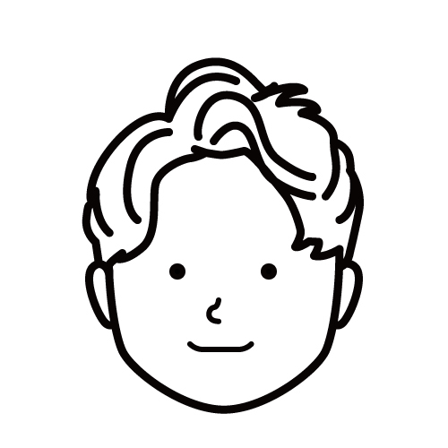
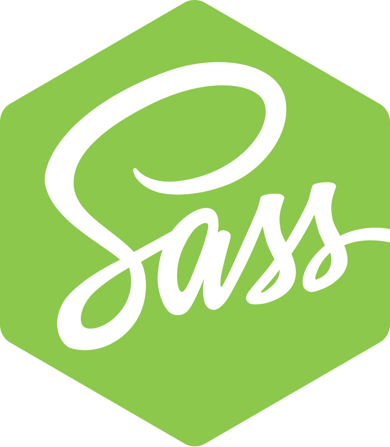
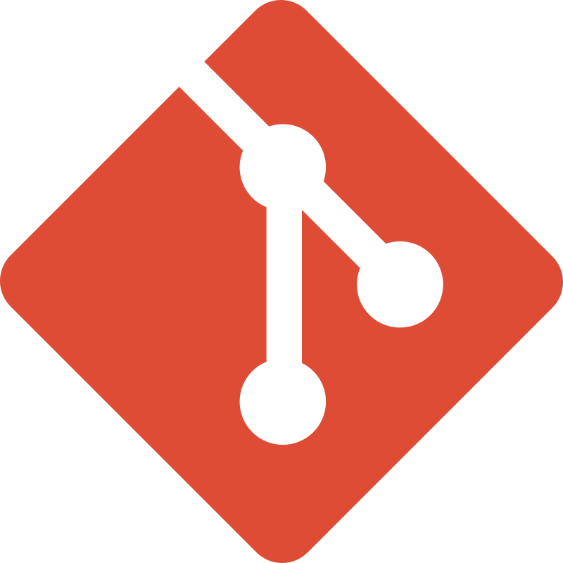

Takada's
portfolio
profile

高校を卒業後、文系私大に入学し、１年で自主退学。理由はたくさんありますが、主な理由は「このままだとお金も時間も無駄にする！！」と思ったこと。詳しくはブログに書いてます...
世界中の人達の心を動かす、そんなエンジニアになります
works
skills
- 
- 

高校を卒業後、文系私大に入学し、１年で自主退学。理由はたくさんありますが、主な理由は「このままだとお金も時間も無駄にする！！」と思ったこと。詳しくはブログに書いてます...
世界中の人達の心を動かす、そんなエンジニアになります